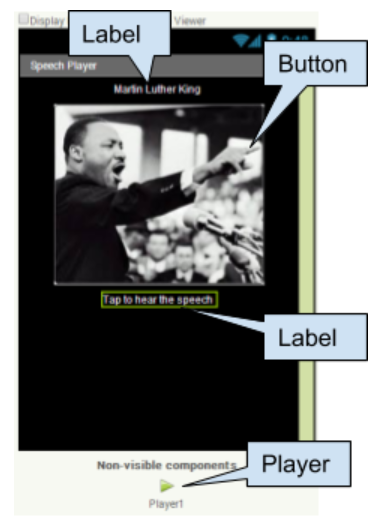
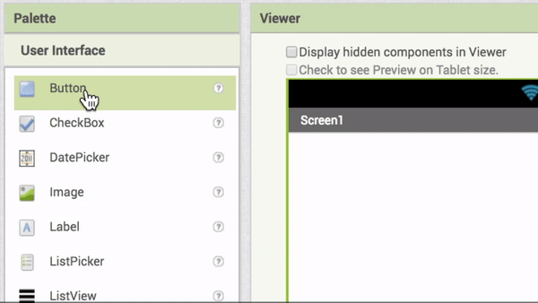

Getting Started
Preview video:
Click on each tutorial section below or for more details see the video tutorial or the text tutorial or the short handout.
Click on each tutorial section below or for more details see the video tutorial or the text tutorial or the short handout.
There is a Toggle Tutorial button in the green bar at the top that you can use to open and close this tutorial pane: 
User Interface (UI)
Drag in the following UI (User Interface) components and change their properties.

| UI Component | Name | Properties |
|---|---|---|
| Screen | Screen1 |
|
| Label | Label1 |
|
| Button | Button1 |
|
| Label | Label2 (under button) |
|
| Media/Player | Player1 (non-visible component) |
|
Coding the App
 Click on the Blocks button at the top right to switch to the Blocks editor. This is where you add the code to make the app work.
Click on the Blocks button at the top right to switch to the Blocks editor. This is where you add the code to make the app work.
- Click Button1 and drag the When Button1.Clicked block out to the middle.
- Click on Player1 and drag the Player1.Start block out and put it inside the When Button1.Clicked block.
Testing the App
In your App Inventor project, click on the Connect menu at the top and choose AI Companion.

 Start up the AI Companion app on your mobile device and click on Scan the QR code (or enter the text code) by pointing your mobile device's camera to the computer screen to read the displayed QR code.
Start up the AI Companion app on your mobile device and click on Scan the QR code (or enter the text code) by pointing your mobile device's camera to the computer screen to read the displayed QR code.
If you have problems, make sure your mobile device and your computer are on the same WiFi or other network. See the Troubleshooting page or try another method of connecting your device such as USB or using the emulator.
When you click on the image of Martin Luther King Jr. in your running app, his I have Dream speech should play.